主要解决3D深度图像中难以检测曲面上高度缺陷等问题，工具将深度图像转换为灰度图像，在灰度图像中根据灰度差凸显高度缺陷，后续利用2D相关检测算法进行缺陷检测，高度抽取工具的处理效果图如下图所示。
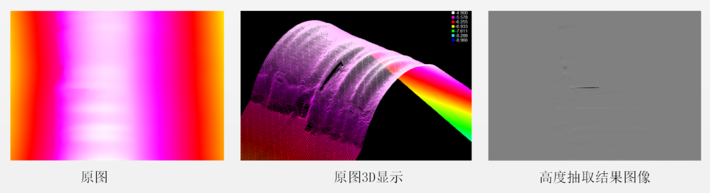
主要用于3D缺陷检测，如顶盖焊图像——针孔缺陷、边缘爆点缺陷、波浪边缺陷等。
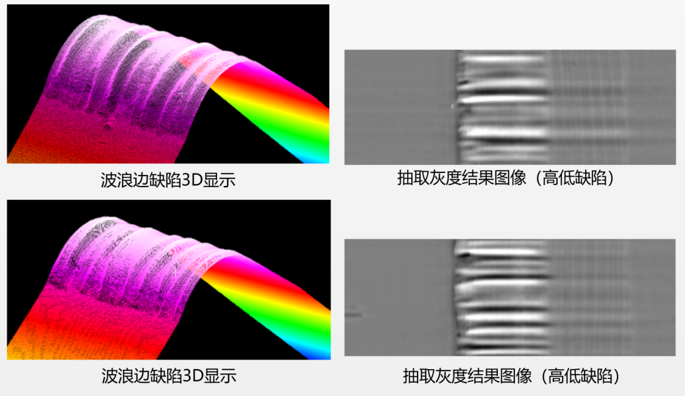
工具主要设置抽取方向、抽取对象、抽取大小以及增益等参数，通过从输入图像中生成去除高频成分（谐波成分）的自由曲面作为基准面，取自由曲面与深度图像的高度差转换为灰度图像，从而根据灰度的偏差凸显深度图像中的高度偏差，高度抽取的原理示意图如下图所示。
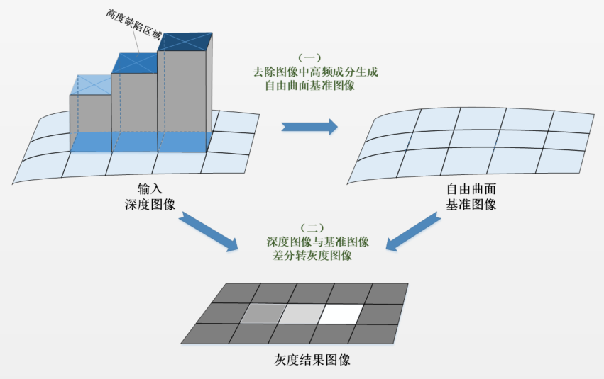
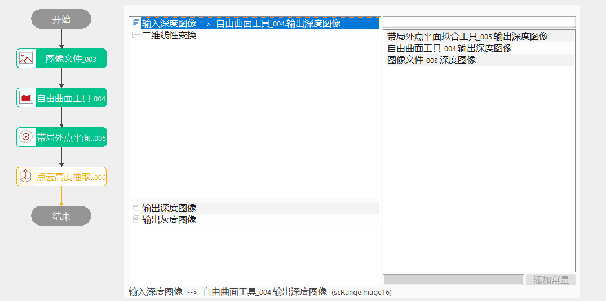
平面类型为基准图像
Step 1 数据链输入自由曲面图像绑定为自由曲面工具输出深度图
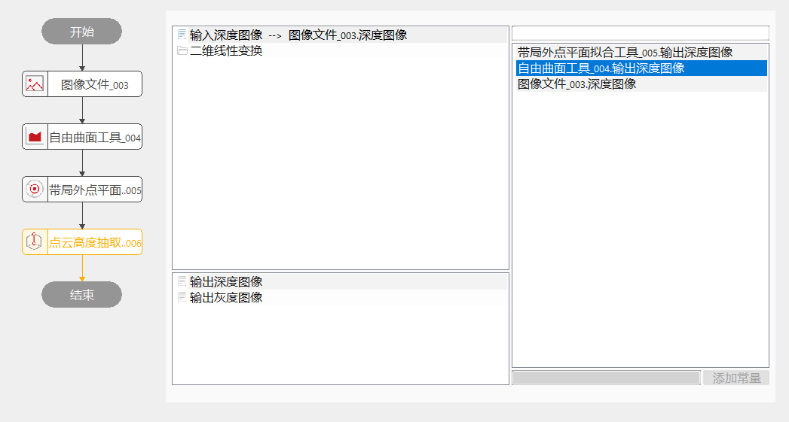
Step 2 打开高级界面，设置转换参数以及区域设置
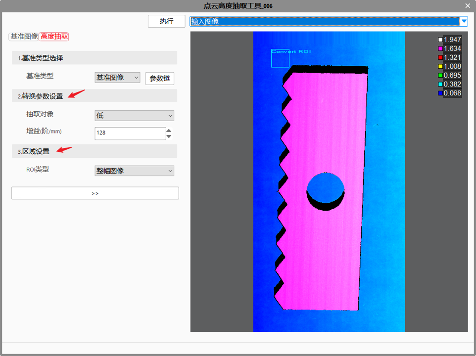
平面类型为基准平面
Step 1 数据链输入基平面绑定为平面拟合工具拟合后的平面
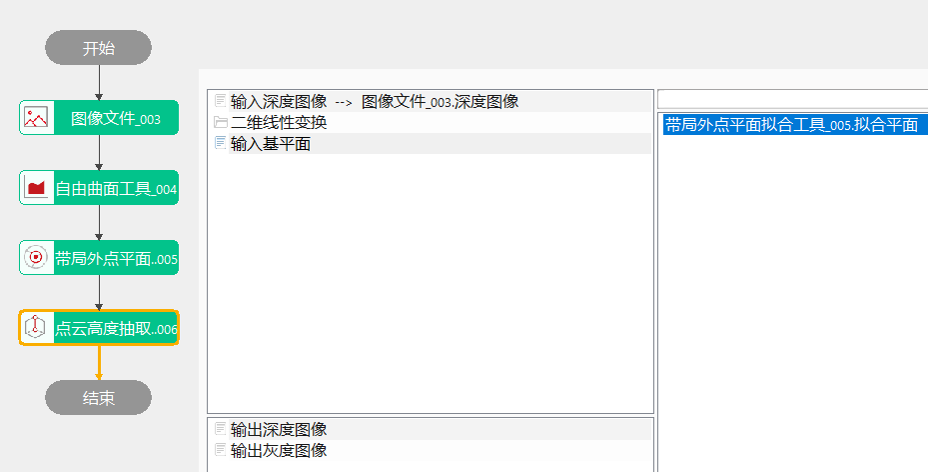
Step 2 打开高级界面，设置转换参数以及区域设置
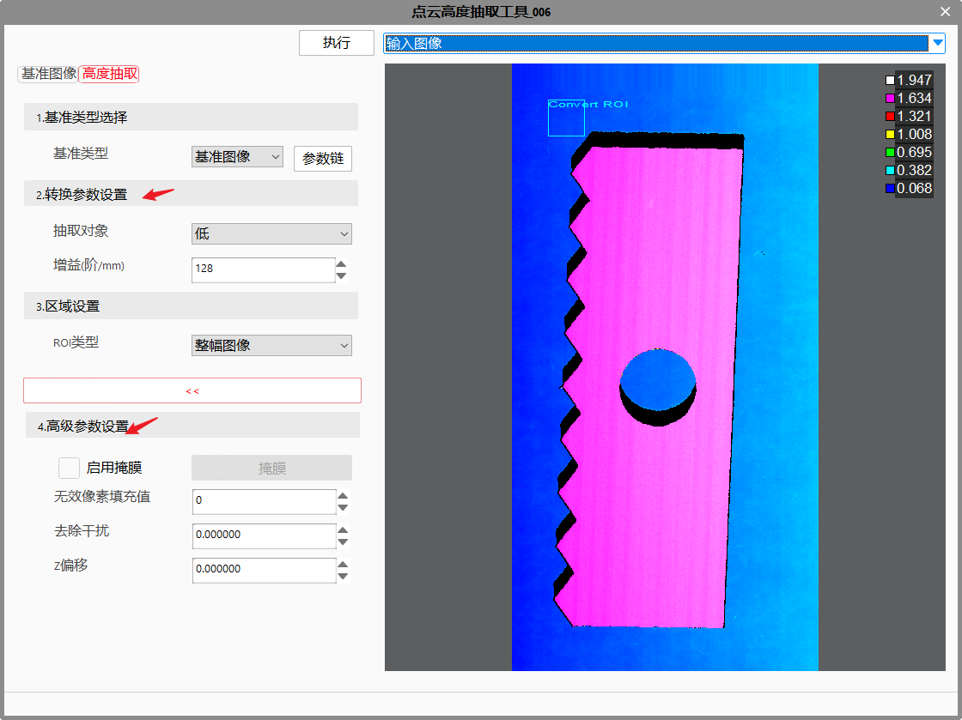
抽取对象
针对抽取面，选择要抽取的高度对象，包括高、低和高低对象。高对象：表示只抽取高于自由曲面上的数据转换为灰度值，抽取面灰度值设置为0；低对象：表示只抽取低于自由曲面上的数据转换为灰度值，抽取面灰度值设置为255；高低对象：以抽取面为中心，将高低两侧到自由曲面的数据转换为灰度值，抽取面灰度值设置128。
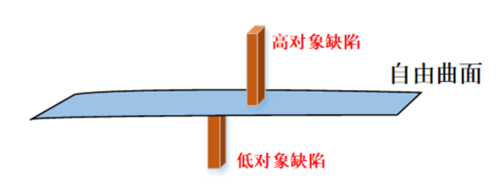
增益
指一个灰度级代表高度值的实际物理量，增益设置越小越能凸显高度缺陷的灰度偏差，但也可能误检非缺陷区域，单位：mm。
无效像素填充值
深度图像中的无效像素对应灰度图像中的像素值的填充，范围为[0,255]。
除去干扰
将小于指定范围的抽取高度视为干扰进行排除，单位mm。
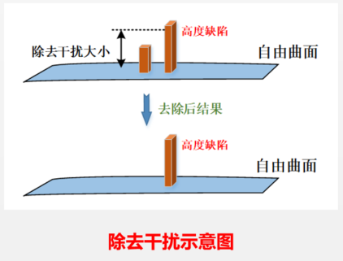
Z偏移
针对抽取面，设定Z轴方向的偏移值，单位mm。
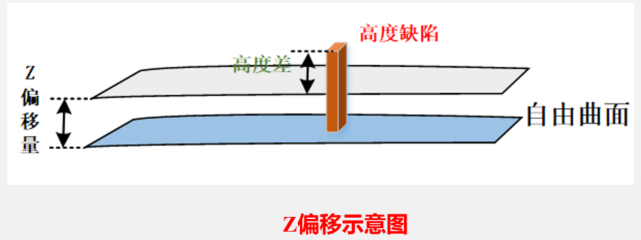
| 现象描述 | 解决方法 |
|---|---|
| 抽取效果达不到预期要求 | 调整转换参数，主要是调整抽取对象和增益这两个参数； |
| 参数名称 | 参数说明 |
|---|---|
| 基准类型 | 分为2种：基准平面和基准图像。 |
| ROI类型 | 待检测区域，分为8种：整幅图像、矩形、仿射矩形、圆形、圆环、椭圆、多边形、多仿射矩形。 |
| 仿射矩形ROI个数 | 仿射矩形个数。 |
| 抽取对象 | 选择要抽取的高度对象，包括高、低和高低对象。 |
| 增益 | 表示一个灰度级对应的高度物理值，单位：mm。 |
| 无效像素填充值 | 设定深度图像缺失像素对应的灰度值。 |
| 去除干扰 | 将小于去除干扰的高度值视为干扰进行排除，单位：mm）。 |
| Z偏移 | 抽取面Z轴方向的偏移值，单位：mm。 |
| 参数名称 | 参数说明 |
|---|---|
| 输出灰度图像 | 输出自由曲面深度图像。 |
| 输出灰度图像 | 输出抽取的灰度图像。 |
| 执行结果 | 工具执行结果 |
| 执行时间 | 工具执行时间 |
参见“\Samples\3D\深度图\点云高度抽取工具.gvp”。